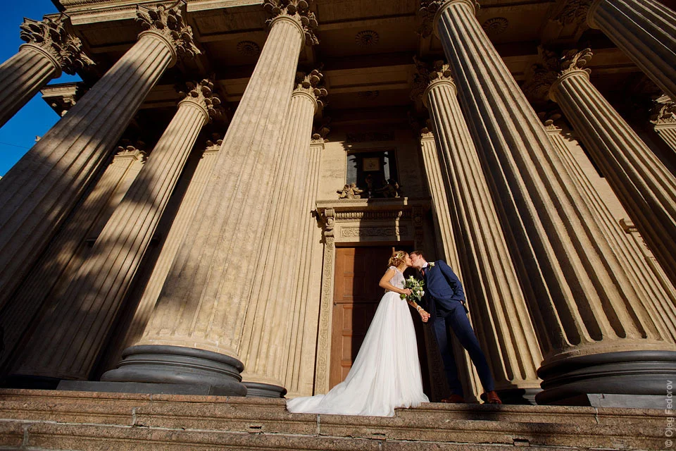

Красивые места для свадебной фотоссессии в Санкт-Петербурге

В этом посте я собрал более 20 мест, где можно пофотографироваться на свадьбу в Петербурге. Все они находятся на улице и подходят только для хорошей погоды. Красивые места для плохой погоды вы можете найти в другом моем посте — где фотографироваться на свадьбу зимой и в дождь.
Исаакиевская площадь
Исаакиевская площадь — одно из моих любимых мест для свадебных фото. Здесь находятся сразу несколько красивых локаций: Иссаакиевский собор, гостиница Астория, Синий мост. Вид на Исаакиевский собор, дом Лобанова-Ростовского и Адмиралтейство.

Гостиница Астория. Одно из красивейших зданий в Петербурге.
Синий мост с видом на реку Мойку. Вдалеке видны купол Казанского собора и Торговый дом «Эсдерс и Схейфальс». Это место тоже находится на Исаакиевский площади.

Казанский собор
Казанская площадь, д. 2
Фотографироваться в колоннах Казанского собора можно только в одном месте — у входа в собор с Казанской улицы. Так как это не главный вход, здесь всегда возможно сделать фото без посторонних людей в кадре.
Другие посты в блоге:
Какой ЗАГС выбрать для свадьбы в Санкт-Петербурге
TВ этом посте расскажу про места для фото в плохую погоду в Санкт-Петербурге
Пост в виде карточки, с фоткой слева. Красивые места для фотосессии
TВ этом посте расскажу про места для фото в плохую погоду в Санкт-Петербурге
Пост в виде карточки, с фоткой слева
TВ этом посте расскажу про места для фото в плохую погоду в Санкт-Петербурге